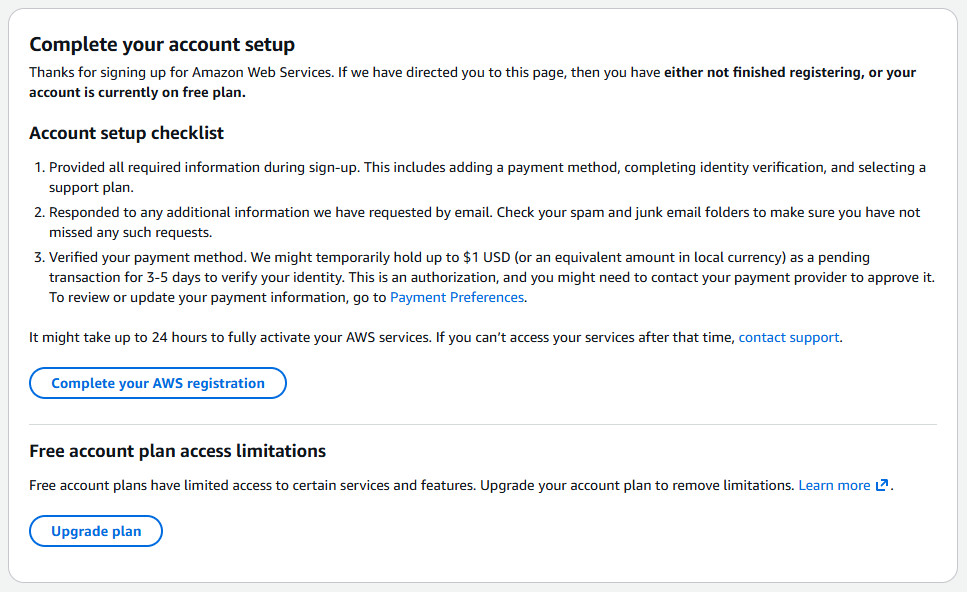

플랜·요금·문의·해지
④ 요금·주의사항
2. AWS 가입과 요금 플랜
2-2. 무료 플랜과 유료 플랜 (Paid Plan)
2025년 7월 15일 이후 새로 가입하면 무료 플랜과 유료 플랜(Paid Plan) 중 하나를 고릅니다.
| 무료 플랜 | 유료 플랜 (Paid Plan) | |
|---|---|---|
| 크레딧 (AWS 요금을 대신 내 주는 쿠폰) | 가입하면 $100, 몇 가지 체험을 마치면 최대 $100 더 | 같음 (가입 크레딧은 플랜과 상관없이 받음) |
| 끝나는 때 | 가입 후 6개월 또는 크레딧을 다 쓸 때 중 먼저 오는 때 | 끝나지 않음. 크레딧을 다 쓰면 쓴 만큼 카드로 결제 |
| 이 서비스에 쓸 수 있는 서버 | 8GB 서버(m7i-flex.large) 는 무료 대상 목록에 있음. 16GB 는 목록에 없음 (아래) | 8GB·16GB 모두 |
무료 플랜이 끝났는데 유료 플랜으로 바꾸지 않으면
- 계정이 자동으로 닫히고, 서버와 월드 데이터에 접근할 수 없게 됩니다
- AWS 는 내용을 90일 동안 보관한 뒤 계정과 모든 자료를 완전히 지웁니다
- 90일 안에 유료 플랜으로 바꾸면 계정을 계속 쓸 수 있습니다
- 남은 크레딧은 유료 플랜으로 바꿔도 사라지지 않고 다음 요금에 자동으로 쓰입니다
→ 월드를 잃지 않으려면, 6개월이 되기 전이나 크레딧이 거의 떨어지기 전에 유료 플랜으로 바꿔 주세요. 바꾸는 곳: AWS 화면 위 검색창에 "Billing" → 결제 화면의 플랜 업그레이드(Upgrade plan) → 계정 업그레이드

서버 크기(메모리)와 플랜
- 8GB 서버 (
m7i-flex.large) — AWS 공식 문서의 "무료 플랜 대상 인스턴스" 목록에 있습니다. 단 크레딧이 줄어드는 건 같고, 크레딧을 다 쓰면 무료 플랜은 끝납니다 - 16GB 서버 (
m7i-flex.xlarge) — 무료 대상 목록에 없습니다 → 유료 플랜이 필요합니다- 무료 플랜에서 16GB 서버를 아예 켤 수 없는지는 공식 문서에 적혀 있지 않습니다 (판매자 확인 필요). 16GB 로 쓰실 거면 설치 전에 유료 플랜으로 바꿔 주세요
- 어떤 크기가 맞는지는 14절 표를 보세요
14. 요금과 권장 서버 크기
요금 (서울, 2026-11 기준 — 바뀔 수 있음)
| 항목 | 요금 | 언제 나가나 |
|---|---|---|
8GB 서버 (m7i-flex.large) | 약 $0.12 /시간 (공인 IP 포함) | 켜져 있을 때만 |
16GB 서버 (m7i-flex.xlarge) | 약 $0.24 /시간 (공인 IP 포함) | 켜져 있을 때만 |
| 디스크 30GB | 월 약 $2.74 (하루 약 $0.09) | 꺼져 있어도 |
| 디스코드 봇·저장 공간 등 | 사실상 0원 |
한 달 예상 (디스크 포함)
| 하루에 켜 둔 시간 | 2시간 | 4시간 | 8시간 | 24시간 |
|---|---|---|---|---|
| 8GB | 약 $10 | 약 $17 | 약 $32 | 약 $91 |
| 16GB | 약 $17 | 약 $32 | 약 $60 | 약 $176 |
- 가입 크레딧(최대 $200)이 있는 동안은 크레딧에서 먼저 빠집니다
- 자동 종료가 있어 보통은 실제로 논 시간 + 30분 정도만 요금이 나옵니다
몇 GB 가 필요할까요 (⚠️ 아직 추정 — 테스트 후 확정 예정)
기준은 하루 총 시간이 아니라 "한 번 켜서 계속 노는 시간"과 월드가 얼마나 커졌는지(기지·팰 수)입니다. ⚠️ 표시는 "되기는 하지만 메모리가 모자라 튕길 수 있음".
| 인원 \ 한 번에 노는 시간 | 2시간 | 4시간 | 8시간 | 계속 켜 둠 |
|---|---|---|---|---|
| 1~4명 | 8GB | 8GB | 8GB ⚠️ | 16GB |
| 5~8명 | 8GB ⚠️ | 16GB | 16GB | 16GB |
| 9~16명 | 16GB | 16GB | 16GB | 상담 |
- 16GB 는 유료 플랜이 필요합니다 (2절)
- 서버 크기를 바꾸고 싶으면 판매자에게 문의하세요
16. 문의 · 그만 쓸 때
- 문의는 판매자 연락처로 — 알림 채널 메시지나
/상태화면 캡처를 같이 보내 주시면 빠릅니다 (접속 주소·비밀번호는 가리고) - 서버 프로그램 업데이트, 서버 크기 변경, 월드 되돌리기·옮기기는 판매자가 합니다
- 서비스를 그만 쓰거나 AWS 계정을 닫기 전에 먼저 판매자에게 문의해 주세요 (월드 백업을 받아야 합니다) — 정리는 판매자가 대신 합니다.
④ 요금·주의사항을 끝까지 읽었습니다